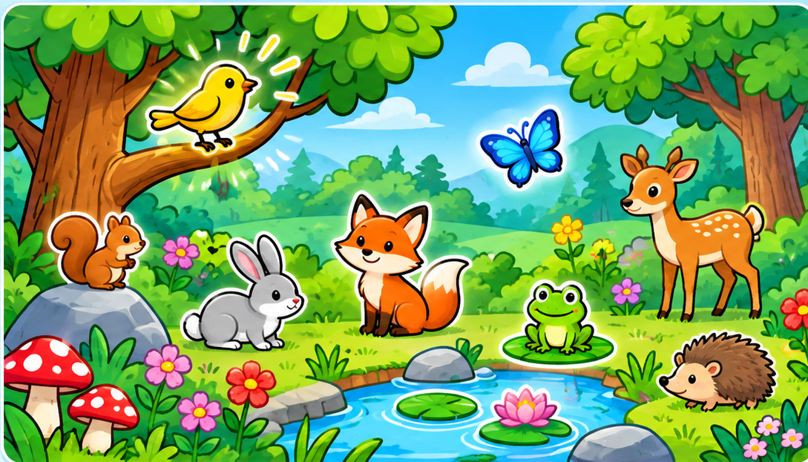

Linguafly Quest ✦
MISIÓN 001 · THE COLORFUL FOREST
1 Explorar2 Practicar · 20 retos3 ¡Lo lograste!
📖 0/16
⭐ 0

✨ Palabras que vamos descubriendo
Pulsa sobre los dibujos del bosque
RETO 1 DE 20
¡Vamos a jugar!
🏆 ¡Bosque salvado!
Has aprendido los animales y los colores del bosque. ¡Tu Diccionario Ancestral tiene nuevas palabras!
📖 🌈 🐦
¡Misión completada!
20 retos superados · 0 estrellas